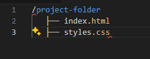
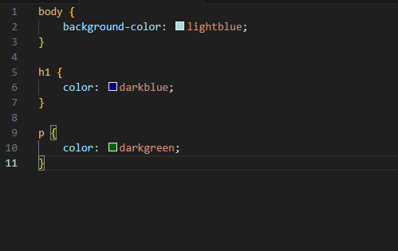
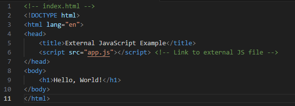

To apply CSS to HTML, you can use the following method:
<h1> heading to dark blue, and the color of the <p> paragraph text to dark green.First, set up your project folder with an HTML file and a CSS file. Here’s an example of how your directory should look:
In your HTML file (e.g., index.html), include the following code to link to the external CSS file:
Example:
<link rel="stylesheet" href="styles.css" type="text/css">
In your CSS file (e.g., styles.css), define the styles that will apply to your webpage:
Example:
"styles.css" defined styles:
body {
background-color: lightblue;
}
h1 {
color: darkblue;
}
p {
color: darkgreen;
}

To apply JavaScript to HTML, you can use the following method:
External JavaScript: External JavaScript allows you to keep your JavaScript code in a separate file
Example:
<!DOCTYPE html>
<html lang="en">
<head>
<title>External JavaScript Example</title>
</head>
<body>
<h1>Hello, World!</h1>
</body>
</html>

Internal JavaScript: Internal JavaScript is written directly within the HTML file inside the <script> tag.
This is useful for small scripts.